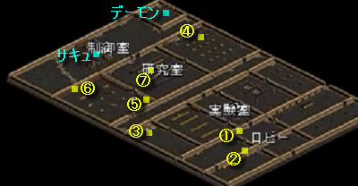
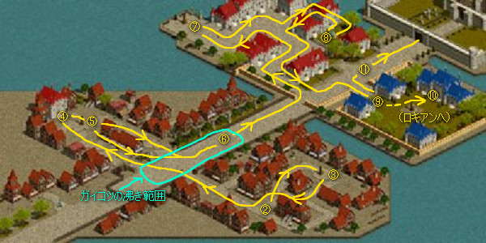

| 名前 | 最低 Lv |
最高 Lv |
ポタの出る場所 | 連動マップ | ジョン・マルコに よる移動 |
クリアＥＸＰ | GOLD | 所要時間 （分） |
備考 |
|---|---|---|---|---|---|---|---|---|---|
| コボルト洞窟の隠されたアジト | １ | １５ | コボルトの洞窟 Ｂ１、Ｂ２ |
アウグ・ブリッジ・バリアート | １１１１１ （Ｂ１） |
３４０００ | |||
| 古代王の墓 | １ | １００ | 地下水路 Ｂ１ | 古都・シュトラ・ビガ | １１１３１ | PT平均 Lv １～５０ １６万 ５１～７５ ３６万 ７６～１００ ６０万 |
PT平均 Lv １～２５ １０万G ２６～５０ １５万G ５１～７５ ２０万G ７６～１００ ２５万G 試練のクリスタルの欠片 盗掘王の秘宝 |
１～１０ | １２/０３/１３メンテにて実装 |
| 枯れ井戸の隠された迷宮 | ５ | ２０ | 枯れ井戸 | アウグ・ブリッジ・バリアート | １１１２１ | ５０００ | |||
| 地下墓地の隠された迷路 | １５ | ３０ | 地下墓地 Ｂ１～Ｂ３ |
古都銀・アリ銀 | １１２３１ （Ｂ１） |
３５０００ | |||
| 狼巣窟の隠された通路 | ２０ | ３５ | 狼の巣窟 | アウグ・ブリッジ・バリアート | １１２４１ | ２９０００ | 狩りEXP多 | ||
| ギルディル川 沼地洞窟の隠された孵化場 | ２０ | ３５ | ギルディル川 沼地洞窟 Ｂ１、Ｂ２ |
アリアン・ブリッジ銀行・ハノブ銀行 | １１３３１ （Ｂ１） |
３９０００ | |||
| テレット・トンネルの隠された洞窟 | ２０ | ５０ | テレット・トンネル 北口・南口 |
古都銀・アリ銀 | １１３４１ （北口） |
２６０００ | |||
| 蟲巣窟の隠された洞窟 | ２５ | ４０ | 蟲の洞穴 | アウグ・ブリッジ・バリアート | １１４４１ | ２４万 | |||
| 路上強盗団アジトの隠された隠れ家 | ３０ | ４５ | 路上強盗団アジト Ｂ２、Ｂ３ |
古都銀・アリ銀 | １１４５１ （Ｂ２） |
２７０００ | |||
| ハノブ高台望楼の隠されたアジト | ４５ | ５５ | ハノブ高台望楼 Ｂ３ |
古都銀・アリ銀 | １１５３１ | ２６０００ | ジョン・マルコには「１Ｆに送る」と言われるが、実際はＢ３に送られる。 | ||
| 旧レッドアイ研究所の隠された通路 | ５５ | ６５ | 旧レッドアイ研究所 Ｂ１～Ｂ３ |
アウグ・ブリッジ・バリアート | １１６２１ （Ｂ１） |
２５万 | |||
| オーガ巣窟の隠された監獄 | ６５ | ８０ | オーガの巣窟 Ｂ１ |
古都銀・アリ銀 | １１７２１ | ３０万 | ２万G | ||
| 鉄鉱山の隠された崩壊地域 | ６５ | ８０ | 鉄鉱山 Ｂ１～Ｂ５ |
古都銀・アリ銀 | １１７３１ （Ｂ１） |
２６万 | |||
| スマグ地下道の隠された地下迷宮 | ７０ | ９０ | スマグ地下道 Ｂ１ |
ギルホ・ハノブ | １１７４１ | ３３万 | |||
| タトバ鉱山の崩れた炭鉱 | ７０ | １０５ | タトバ鉱山 Ｂ１ |
古都・シュトラ・ビガ | １１７５１ （Ｂ１） |
３３万 | |||
| 東バヘル急流カルスト洞窟のリザード洞窟 | ７５ | １０５ | カルスト洞窟 | 古都・シュトラ・ビガ | １１８５１ | ４３万 | |||
| 警備兵墓の封印された魂の迷宮 | ８０ | １００ | 警備兵墓 Ｂ１、Ｂ２ |
アウグ・ブリッジ・バリアート | １１８７１ （Ｂ１） |
３３万 | |||
| 廃坑の隠された金鉱 | ８０ | １１５ | 廃坑 Ｂ１～Ｂ１０ |
アウグ・ブリッジ・バリアート | １２１１１ （Ｂ１） |
１５０万 | ２０万G | ２０ | 要レスト |
| 血塗られたオーガの洞窟 | ８５ | １０５ | オーガの王窟 Ｂ１ |
アリアン・ブリッジ銀行・ハノブ銀行 | １２１２１ | ４９万 | 表示は８５～１０５だが、実際は８０～９５という情報あり。 確認情報募集中。 |
||
| アルパス地下監獄の隠された地下牢 | ９０ | １１０ | アルパス地下監獄 Ｂ１～Ｂ３ |
アリアン・ブリッジ銀行・ハノブ銀行 | １２１５１ （Ｂ３） |
５６万 | |||
| シーフギルド倉庫の隠された部屋 | ９０ | １１０ | シーフギルド倉庫[Ｃ] １Ｆ |
アウグ・ブリッジ・バリアート | １２１４１ | ５６万 | １万G | ||
| 麻薬巣窟の隠された研究所 | ９０ | １１０ | 麻薬巣窟 Ｂ２ |
アウグ・ブリッジ・バリアート | １２１３１ | ５６万 | |||
| 傭兵達の大きな墓の不思議な妖怪部屋 | ９５ | １２５ | 傭兵達の大きな墓 Ｂ１、Ｂ２ |
アウグ・ブリッジ・バリアート | １２２３１ （Ｂ１） |
次LvUPに必要な EXP×５０％ |
８万G | １０～１５ | ０９/０６/３０メンテにて仕様変更 |
| イフリィトの棲み処 | １００ | １３０ | ソゴム山脈 赤山登山路 |
古都銀・アリ銀 | １２２２１ | ７０万 | |||
| マーズ・ルガスの秘密基地 | １００ | １５０ | オート地下監獄 Ｂ１ |
アリアン・ブリッジ銀行・ハノブ銀行 | １２２４１ | 次LvUPに必要な EXP×５０％ |
２７万G 試練のクリスタルの欠片 盗掘王の秘宝 |
５～１０ | １２/０３/１３メンテにて実装 |
| トワイライト滝の隠されたアジト | １２５ | １６５ | トワイライト滝 Ｂ３、Ｂ４ |
古都銀・アリ銀 | １２３２１ （Ｂ３） |
次LvUPに必要な EXP×５０％ |
１０～１５ | ０９/０６/３０メンテにて仕様変更 | |
| ハノブ南側望楼の地下洞窟 | １３０ | １７０ | ハノブ南側望楼 Ｂ３ |
アウグ・ブリッジ・バリアート | １２３３１ | ５２万 | |||
| 魔法傭兵墓の呪われた亡者の安息所 | １５０ | １９０ | 魔法傭兵の墓 Ｂ１、Ｂ２ |
◆オリジナル アウグ・ブリッジ・バリアート ◆ミラー１、２ アリアン・ブリッジ銀行・ハノブ銀行 |
１２５３１ （Ｂ１） |
次LvUPに必要な EXP×５０％ |
１０万G | １５～２０ | ０９/０６/３０メンテにて仕様変更 要火抵抗、呪い抵抗 ソロではクリア不可という情報あり。 PT全員が秘密内にいないと、最後の怨霊が沸かないそうだ。 確認情報募集中。 |
| 河口ダンジョンの隠された宝物部屋 | １６０ | ２００ | 河口ダンジョン「ラ」 Ｂ１ |
アリアン・ブリッジ銀行・ハノブ銀行 | １２６４１ | １２０万 | ３０万G 試練のクリスタルの欠片 盗掘王の秘宝 |
１２/０３/１３メンテにてクリア報酬変更 クリア時報酬以外にも １. 経験値１５０００pts＋お小遣い１０００Goldが ６か所 ２. 経験値７５００pts＋お小遣い５００Goldが ４か所 ３. 経験値３０００pts＋お小遣い２５０Goldが １か所 といった感じで、途中でEXPやゴールドがもらえる場所がある模様。 ←のクリアEXPの数値はこれらを全部含めた報酬として表示している。 |
|
| ソルティケーブからの脱出 | １９０ | ２３０ | ソルティケーブ Ｂ８ |
古都銀・アリ銀 | １３１２１ | ３５０万 | ３３万G 試練のクリスタルの欠片 盗掘王の秘宝 |
２～５ | |
| 呪いの墓に建つ呪われし塔 | １９５ | ２３５ | 呪いの墓 Ｂ１、Ｂ２ |
◆全て アウグ・ブリッジ・バリアート |
１３１１１ （Ｂ１） |
４００万 | ３５万G 試練のクリスタルの欠片 盗掘王の秘宝 |
１０～１５ | 要火抵抗、呪い抵抗 |
| 河口ダンジョン'ラ'の隠された洞窟 | ２１０ | ３００ | 河口ダンジョン「ラ」 Ｂ２ |
アリアン・ブリッジ銀行・ハノブ銀行 | 次LvUPに必要な EXP×約３８％ |
試練のクリスタルの欠片 盗掘王の秘宝 |
５～１０ | １２/０３/１３メンテにてクリア報酬変更 | |
| 河口ダンジョン'ラ'の隠された洞窟 （クエスト「シア・ルフト」受諾時） |
２１０ | ３００ | 河口ダンジョン「ラ」 Ｂ２ |
アリアン・ブリッジ銀行・ハノブ銀行 | ２２０万 | １２/０３/１３メンテにてクリア報酬変更 マップが見えない模様 |
|||
| 小さい傭兵墓に巣食う亡者共の宝物庫 | ２２５ | ２６５ | 小さい傭兵の墓 Ｂ１、Ｂ２ |
◆オリジナル アウグ・ブリッジ・バリアート ◆ミラー１ アウグ・ブリッジ・バリアート ◆ミラー２ 古都銀・アリ銀 |
１３３３１ （Ｂ１） |
５８０万 | ５０万G 試練のクリスタルの欠片 盗掘王の秘宝 |
５～１０ | １２/０３/１３メンテにてクリア報酬変更 ・箱は扉を開くための奥の２つを必ず触ること。 ・一番奥のスイッチを触るとミイラが沸く。 この時、触る前にリダは自分のインベをチェックし、空きがある事を確認するべし。 空きがないと古文書が獲得できずに失敗となり、最後のEXPが減ってしまう。 ・おこづかい６０万が地味にうれしい。 ◆１２/１２/１１追記 箱のワープ場所が以前と変わっている模様。 クリア手順に関して投稿をいただいたが、私自身確認できるキャラが現在いないため、 そのまま転記させていただく。 参考にしてください。 １．秘密に入って直ぐ正面の箱に触って右奥にワープ ２．右奥の扉を開く箱に触る ３．入口の方へ戻り、最初に触った箱から数えて２つ目の箱に触り左奥にワープ (以前はマップ中央部にワープする箱だった場所) ４．左奥の取り場を開く箱に触る ５．ボスを倒す。 |
| 過ぎし栄光の展示場にある遺物保管所 | ２５０ | ２９０ | 過ぎた栄光の展示場 | ◆オリジナル アウグ・ブリッジ・バリアート ◆ミラー１、２ アリアン・ブリッジ銀行・ハノブ銀行 |
１３５１１ | ７３０万 | ４０万G 試練のクリスタルの欠片 盗掘王の秘宝 |
５～１０ | １２/０３/１３メンテにてクリア報酬変更 |
| キングクラブの巣 | ２６０ | ３００ | キャンサーの巣 Ｂ４ |
古都銀・アリ銀 | １３６２１ | ７６０万 | ５０万G 試練のクリスタルの欠片 盗掘王の秘宝 |
１～１０ | |
| ハイランド洞窟の堕落した部族 | ２９０ | ３１０ | ハイランド洞窟 Ｂ１ |
古都銀・アリ銀 | １４１２１ | １０９０万 | ６０万G 試練のクリスタルの欠片 盗掘王の秘宝 |
１２/０３/１３メンテにてクリア報酬変更 | |
| ダークソウルの封印場所 | ２９０ | ３３０ | 名も無い崩れた塔 １１Ｆ |
古都銀・アリ銀 | １４１１１ | １０３０万 | ６０万G 試練のクリスタルの欠片 盗掘王の秘宝 |
５～１０ | 要火抵抗、呪い抵抗 |
| レッドアイの隠されたアジト | ３２０ | ３４５ | スウェブタワー Ｂ５Ｆ |
古都・シュトラ・ビガ | １４４１１ | １１６０万 | ６０万G 試練のクリスタルの欠片 盗掘王の秘宝 |
１５～２０ | １２/０３/１３メンテにてクリア報酬変更 ０９/０３/１７メンテにて実装 ・マップによる抵抗低下はなし。 ・ワーム有 ・物理しか効かないMOＢ、魔法しか効かないMOＢがいる。 PT編成 ＢIS、WIZ、低下のうち最低どれか１職はほしい。 特にＢISなしの場合は、状態異常抵抗を準備するとよいだろう。 途中、物理しか効かない中ボス、魔法しか効かない中ボスが沸くので、 火力は物理と範囲が最低１ずつ。 範囲がそろわない場合、物理アチャがいればインターを落とす事で 魔法のみの中ボスにダメを与える事は可能だが、時間がかかる。 痛い 全体的に痛い。特に最後のボスはかなり痛い。 PTがそろっている場合は特に問題ないだろうが、 ＢISなしの場合は死ぬ事を想定して復活や灰、しっぽなどを準備しよう。 ラスボスについて 最後のボスはある程度HPが削られるとMAXHPの半分のダメを与える範囲攻撃をしてくる。 ３回食らうとペットが確実に死ぬので、２回目が発動したらWIZはペットにアスヒをしよう。 重なっててペットがタゲれない事も多いので、テイマは一度離れて見える所にペットを連れて行くとよい。 ＢISなしの場合はタゲを合わせて周りのザコから１匹ずつ倒していこう。 欲張って全部やろうとすると全滅の可能性あり。 |
| レッドアイ特殊エージェントのアジト | ３４０ | ３６０ | スウェブタワー Ｂ６Ｆ |
古都・シュトラ・ビガ | １４４２１ | １３００万 | ７０万G 試練のクリスタルの欠片 盗掘王の秘宝 |
３～１０ | |
| フォーリン望楼の隠された地下監獄 | ３５５ | ４０５ | フォーリン望楼 | ◆オリジナル 古都銀・アリ銀 ◆ミラー１、２ アウグ・ブリッジ・バリアート |
１５１１１ | １５００万 | ８０万G 試練のクリスタルの欠片 盗掘王の秘宝 |
３～５ | １２/０３/１３メンテにてクリア報酬変更 途中の鍵付き扉はアリアンのちびっこが売ってる銅の鍵で開く。 |
| カダーム・ギガスの寺院 | ４０５ | ４３５ | 暴かれた納骨堂 Ｂ１ |
◆全て アウグ・ブリッジ・バリアート |
１５１２１ | 簡単 １６００万 普通 ２０２０万 難しい ２３４０万 非常に難しい ２４３０万 |
簡単 ６０万G 普通 ８０万G 難しい １００万G 非常に難しい １２０万G 試練のクリスタルの欠片 盗掘王の秘宝 |
１０～３０ | ０９/０３/１７メンテにて実装 ◆PT編成 ・リダがＮＰＣに話して難易度選択。 ・難易度によって制限時間が変わる。 「簡単」９０分、「普通」６０分、 「難しい」４５分、「非常に難しい」３０分。 内容やMOＢの強さはどれも同じ。 ・フィールド抵抗低下が激しい。 １Ｆ：全属性 -１３０％ ２Ｆ：全属性 -１５０％ １Ｆでは水抵抗と風抵抗 ２Ｆでは水抵抗と闇抵抗 を主に上げるとよい。 抵抗装備なしだとアーチをもらってもマイナスになる場合が少なくない。 必要に応じて抵抗装備を準備していこう。 特にＢISは、自分の抵抗が低いとミラー死する可能性大なので、 自分の抵抗を９０以上、またはそれに近い状態にしておく事が望ましい。 ・ラスボスのカダーム・ギガスは ①最大HP×１/２ダメの攻撃 ②毒ダメ ③即死攻撃 などをしてくる。 ソロだと攻撃がかなりゆるくなるため、高火力がいる場合は他PTメンバーが離れて待機し、ソロで倒すのも手。 ・カダーム・ギガスを倒した瞬間、クリアEXPが入る。 倒した瞬間死んでいるとクリアEXPが入らないので注意。 高級復活巻物を持っていき、死んでもすぐに起きれるようにしておくとよいだろう。 |
| ダークエルフ王宮の隠された倉庫 | ４４０ | ４９０ | ダークエルフ王宮 １Ｆ |
◆オリジナル アウグ・ブリッジ・バリアート ◆ミラー１、２ アリアン・ブリッジ銀行・ハノブ銀行 |
１５５２１ | ２４００万 | １１０万G 試練のクリスタルの欠片 盗掘王の秘宝 |
３～５ | ２人でも簡単にクリアできるお手軽な秘密。 スパインに行かず、こちらにずっと通う人も多い。 【１２/０６/０２追記】 以前はソロ不可だったが、現在はソロが可能になっているようだ。 |
| スパインホールのミステリーゾーン | ４５０ | ５００ | ７番目のスパインホール Ｂ１ |
古都銀・アリ銀 | １５５１１ | ２５００万 | １２０万G 試練のクリスタルの欠片 盗掘王の秘宝 |
３～５ | |
| 呪いを受けたミズナ洞窟の隠された地下迷宮 | ５００ | ５５０ | 呪いを受けたミズナの洞窟 Ｂ１ |
◆オリジナル 古都銀・アリ銀 ◆ミラー１、２ アリアン・ブリッジ銀行・ハノブ銀行 |
１６１１１ | ３３００万 | １３０万G 試練のクリスタルの欠片 盗掘王の秘宝 |
１０～１５ | １２/０３/１３メンテにてクリア報酬変更 |
| 名も無き遺跡のデーモンキングのねぐら | ５３５ | ５８５ | 名も無き遺跡 Ｂ１ |
古都銀・アリ銀 | １６６１１ | ３９００万 | １５０万G 試練のクリスタルの欠片 盗掘王の秘宝 |
３～５ | ・要火抵抗 ・中央にいるデーモンキングは、HPが削れると１人を強制ワープさせる攻撃をしてくる。 デーモンにほぼ重なる感じで位置を取るとワープさせられにくい。 ◆速攻クリアしたい場合は入口に１人待機で 中央の部屋のデーモンキングを倒した後、 すぐ入口のNPC（トザー）に話すとクリア出来る。 最後にNPCに話す人はリダでなくても誰でもよいので、 時間節約のために速攻クリアしたい場合は、 入口に１人待機させておくとよいだろう。 |
| ヘソパルの洞窟 | ５５０ | ６００ | ゴールド・スワンプ洞窟 Ｂ２ |
古都銀・アリ銀 | １６６２１ | ４２００万 | １６５万G 試練のクリスタルの欠片 盗掘王の秘宝 |
２～５ | ・ヘソパルの花を取ってNPCともう一度話す前にリザキリを一定数（３匹ぐらい？）以上倒してしまう ・火蜘蛛を３匹以上倒してしまう のいずれかをやってしまうとクリア失敗になるので注意。 ◆速攻クリアしたい場合は入口に１人待機で 遺跡秘密同様、 最後にNPCに話す人はリダでなくても誰でもよい。 時間節約のために速攻クリアしたい場合は、 入口に１人待機させておくとよいだろう。 |
| モリネルタワーの隠された研究所 | ５８０ | ６２０ | モリネルタワー ３Ｆ、４Ｆ |
◆オリジナル 古都銀・アリ銀 ◆ミラー１、２ 古都・シュトラ・ビガ |
１７１１１ | ４７００万 | １７０万G 試練のクリスタルの欠片 盗掘王の秘宝 |
５～１０ | MOＢがかなり痛い。火抵抗もあった方がよい。 ドロップが比較的よい。 ◆走り抜け可、透明系の装備をつけると楽 MOＢは一切倒さなくてもクリアできるので、走りぬけ可能。 ブラー、ターゲット回避、透明などの透明系装備がある場合はつけるとよい。 茶サソリやクモなど一部のMOB以外からはタゲられなくなるため、らくちん。 |
| ビックマウスダンジョンのラットキング区域 | ６００ | ６４０ | ビッグマウスダンジョン Ｂ３、Ｂ４ |
◆オリジナル アウグ・ブリッジ・バリアート ◆ミラー１、２ アリアン・ブリッジ銀行・ハノブ銀行 |
１７１２１ | ５１００万 | １８０万G 試練のクリスタルの欠片 盗掘王の秘宝 |
３～５ | ラスボスのラットキングは即死攻撃をしてくる。 ホルパや混乱が効く。 できない場合は即死抵抗を用意していくとよい。 |
| 閉鎖された時空研究所 | ６５１ | ６８０ | モリネルタワー ６Ｆ |
古都銀・アリ銀 | １７７１１ | サキュ ２０００万 デーモン １０００万 |
２００万G 試練のクリスタルの欠片 |
１０～６０ | ◆概要とPT編成 ラットまでの秘密と比べると格段に難易度が上がる。 物理攻撃・魔法攻撃ともに痛い。 PT編成としては、 高物理火力が１人以上、ＢIS、WIZ、低下推奨。 マップによる属性低下が全て－１５０％という厳しいものである。 特にＢISなしの場合、 魔法抵抗をいかにして稼ぐかが、安定してクリアするための重要なポイントとなる。 ◆準備するとよいもの ・ライトドラグーンの皮 → 魔法抵抗を稼ぐため。高スキルＢISがいれば不要。 ・魔法抵抗装備（リフレクションコーティング、ストライダーなど） → 同上。 ・トラップ指 → 最後のデーモンに罠をかける事で攻略が楽になる。 ・ライトドラグーンの翼 → 移動時間短縮。 ◆おおまかな手順（ザコを倒す所は任意なので省略します） １．入り口のNPCに話しかける ２．シェリーの情報１と２を拾う ３．右下の部屋で実験体クマを倒す→実験室への扉が開く ４．実験室右の部屋の本棚を触ってレバーを下げ、MOＢを沸かせる →マーキとピンククラゲが沸く。倒すのがきつい場合は沸かせなくても可。 ５．右奥の部屋で実験体イヌを倒す→研究室への扉が開く ６．戻って今度は実験室左の部屋に行き、Aランク研究員に話しかけてMOＢを沸かせる ７．左奥の部屋で使徒を倒し、机を触ってシェリーの情報３を入手 ８．研究室の右の部屋で実験体ネコを倒す。奥の机を触ってシェリーの情報４を入手 ９．研究室中央の部屋でシェリーの情報７と５を入手 １０．研究室左の部屋で実験体ウシを倒す→制御室への扉が開く。奥の本棚を触りシェリーの情報６を入手 １１．制御室に入り、左にいるNPC（狂気の研究員）に話しかけてサキュボス（時空の主）を沸かせる １２．サキュボスを倒すと５分のカウントダウンが始まる。右上の部屋の扉を触るとマーキとピンククラゲが沸く。 １３．右上の部屋に入り、NPC（記憶喪失シェリー）と話すとデーモン小が沸く。 １４．デーモン小を倒すとデーモン中が沸き、それを倒すとデーモン大＋芋虫１５匹が沸く。 １５．以上を倒すと終了。 ◆リダの仕事 １．入り口のNPCと話す ２．レバーを引く（他の人がやっても可） ３．Aランク研究員と話す（他の人がやっても可） ４．サキュボスの所のNPC（狂気の研究員）と話す ５．最後の部屋の記憶喪失シェリーと話す（他の人がやっても可？） 必ずする仕事はNPCと話す事のみ。 シェリーの情報集めもリダが兼ねてやる事が多いが、これは他の人に任せてもよい。 ◆シェリーの情報を拾っていく シェリーの情報１から７までを全て回収すると、 サキュボスを倒した後、最後のデーモンへの部屋へ進める。 １つでも取り逃すと最後の部屋へは行けなくなるので注意。 取り逃しを防ぐため、私が回収役をやる時は、 回収したらその番号をPTチャットで発言するようにしている。 シェリーの情報の場所は↓を参照。 順路に従って進むと１２３４７５６の順で取る事になる。 ２・５・７は、壁の裏側から触るとらくちん。  ◆サキュボス（時空の主） 制御室のデジーズを倒したら、左にいるNPCと会話。 会話が終わるとサキュボス（時空の主）と護衛のサキュが４匹沸く。 倒した瞬間にクリアボーナス（２０M）が入るため、全員生きている事を確認してから倒す事。 火力が低い場合はサキュボスを最後の部屋の手前まで釣って倒すとよい。 倒した瞬間から５分のカウントダウンが始まるので、時間の節約になる。 ◆最後の部屋へ 時空の主を倒すと５分のカウントダウンが始まる。 ここから先は落ちたり町戻りしたりすると、もう秘密には戻って来れないので注意。 最後の部屋への扉を触るとマーキ２匹とピンククラゲ４匹が沸く。 火力が不安な場合はマーキを↓か←に隔離してイカを倒し、先にデーモンを倒しに行くとよい。 火力に余裕がある場合はマーキ・イカを全部倒してから中に入る。 マーキを倒さず、かつ隔離もせずにデーモンを沸かせると、 マーキにデビルスピードがかかって大変残念な事態になるので注意。 最後の部屋の中にいる記憶喪失シェリーに話しかけると、 デーモンが１匹ずつ３回、計３匹沸く。 最後の３匹目はイモ虫が同時に１５匹沸き、それらにデビルスピードがかかるため危険。 強い範囲がいればイモ虫を瞬時に蒸発させる事が出来る。部屋の中で勝負しよう。 自信がない場合は２匹目のデーモンを部屋の外に釣り、全員外に避難して倒した後、 部屋の入口から少しずつイモ虫を倒していこう。 なお、デーモンをディスペする事でデビルスピードを消す事が可能。 罠指がある場合はデーモンに罠をかけると火攻撃を防ぐ事が出来る。 ただし、罠をかけた状態でもデーモンの右側に位置取ると火攻撃をくらってΩ＼ζ°)ﾁｰﾝ となる。 気をつけよう。 ◆主なMOＢの注意点 ■デジーズ 緑の小さめの蚊のようなやつ。 沸き場所は ①情報２の↓ ②「実験室」の文字の所 ③制御室の文字の所 の計３箇所。 それぞれ１５～２０匹程度固まって沸く。 命中・回避が共に高い。 範囲で倒すと楽だが、 あまり回避出来ない人が範囲を打って まとめてタゲを取ってΩ＼ζ°)ﾁｰﾝ というシーンが時々ある。 気をつけよう。 ■ジャイアント 物理攻撃が痛い。 突進されてΩ＼ζ°)ﾁｰﾝ というシーンが時々ある。 気をつけよう。 ■ガイコツ 魔法攻撃がほぼ効かない。 物理攻撃が痛い上に、結構当ててくる。 魔法職が範囲を打ってタゲをたくさん取ってしまい倒せずΩ＼ζ°)ﾁｰﾝ というシーンが時々ある。 気をつけよう。 ■マーキ＆ピンククラゲ 実験室のレバーを引いた直後と、サキュボスを倒した後にそれぞれセットで出てくる。 マーキのスポイルドウォーター（近くで攻撃した時に反射でくらう範囲の水闇攻撃）とミラーカーズ、 ピンククラゲのチュイーンなど、エグい攻撃ばかり。 魔法抵抗が低いと簡単に死ねる。 さらにマーキは物理攻撃も痛く、ＨＰ高めでブロックもするためなかなか倒せない。非常に厄介。 攻略としては 先にピンククラゲを全部倒して、最後にマーキを倒すのがよい。 特に最後の部屋の手前では、倒すのが厳しい場合はマーキを隔離するとよい。 ■使徒 「シェリーの情報３」のある部屋にいる。 光攻撃が痛い。 使徒から近い所に２人以上いると光属性のもわもわビームをしてくる。 魔法抵抗が低いとこの光もわもわビームをくらってΩ＼ζ°)ﾁｰﾝ というシーンが時々ある。 気をつけよう。 使徒には２人以上近づかず、物理攻撃力の高い人が１人で倒すのがよい。 ■ゴーレム、ムチ子 どちらも魔法攻撃がほぼ効かない。 ワーム注意。 魔法抵抗が低い状態でワームを出してしまうと普通に死ねる。気をつけよう。 |
| ヴァンパイア・キングダム | ６８１ | ７１０ | 時の森 ３層 | ◆オリジナル 古都銀・アリ銀 ◆ミラー１、２ 古都・シュトラ・ビガ |
１７９１１ | ランクC ２０００万 ランクＢ ３０００万 ランクA ４０００万 ランクS ５０００万 |
ランクC １８０万G ランクＢ ２００万G ランクA ２２０万G ランクS ２５０万G 試練のクリスタルの欠片 |
１５～∞ |
◆PT編成 経験的にはＢIS１、WIZ１、低下１、火力５の形が一番早かった。 ただし、補助職１ずつは負担が小さくないので、ＢISWIZがしっかり動けて、 かつある程度殲滅力がある事が条件となる。 補助職を増やすとPTは安定するが、火力が少ないor低いとクリアに大変時間がかかるので、 バランスがポイント。 低下がいればだいぶ楽。 ◆Sランクの取り方 ＜１層目＞ ・ヘルシーグ卿に話しかける。 ＜２層目＞  ②アーニーのみに話しかける。 ③市民居住地の時計塔をクリック→MOＢが沸く ④酒場に入り、奥にいる「酔っ払いの青年」に話した後、ウエイトレスに話しかけて２→１でMOＢが沸く ⑤商店街の時計塔をクリック→MOＢが沸く。範囲が痛い ⑥中央の大通りにガイコツが沸いている。 大変やわいが攻撃力が非常に高く、くらうと即死コース。 しかも魔法無効。 アチャランサがいればマルチで突っ込むのがよい。 わりと広い範囲に沸くので、倒しもらしに注意。 ⑦貴族居住地の時計塔をクリック→MOＢが沸く ⑧貴族居住地の噴水から飛べるエルフ王は倒さなくても可。 PT全体の火力が低い場合はパス推奨。 →EXP１５０～３００万程度入る ⑨ブラッディトリオを倒す。 ⑩１人ブレア邸に入り、奥のメールボックスをクリックして１→１。帰りにロキアンに話しかける。 →これでラスボスでロキアンが手助けしてくれる。 ⑪ブレア男爵邸の時計塔をクリック→MOＢが沸く。範囲が痛い ＜３層目＞ 入ってすぐの所にいるメテオ爺で苦戦したという話を時々聞く。 ＢISの抵抗やスキルが低いとミラー死→全滅コースになるので注意しよう。 最後の部屋は光った方の床にいるとHP半分ぐらいダメを食らう範囲攻撃を受ける。 ドラクル男爵を倒した後、アーニーに話しかけて終了。 ◆ロキアンの出現方法 【！注意！】 現在、最後のボスでロキアンを出現させた場合、 ボスを速く倒しすぎるとクリア不可になる（NPCが現れずカウントダウンも始まらない） という不具合があるようだ。 火力がよほどない時以外はロキアンを使用しない事をおすすめする。 ・酒場で「酔っ払いの青年」に話しかける ・ブレア邸の奥の方でメールボックスをチェック ・その帰り道にロキアンが出現しているので話しかける ロキアンは最後のドラクル伯爵の所で出現、HPを削ってくれる。 以上。 やたらカーズをかけてくるMOＢがいる。 モリネル６Ｆ秘密同様、 普段のオートスキルはアーチエレメで問題ないが、 カーズがかかって首輪マークが出たら、一時的にレストに切り替えよう。 |
| 放棄された地下牢獄 | ７００ | １５００ | ブラックファイヤー外郭 | アウグ・ブリッジ・バリアート | － | １億 | 異界の清水 | ２～２０ | ＢＦ秘密とも呼ばれる。 Ｌｖ７００から１５００まで行ける。（１８１００４アップデートにより、上限Ｌｖ変更） 入口はブラックファイヤー外郭の、マップ左下方面（７，１００）より。 ◆ステが２０％下がる この秘密内では、ステが２０％下がってしまう。 装備のステ要求がギリギリだと、装備が外れてしまうので気をつけよう。 ◆敵が強い ＭＯＢのＬｖ帯は９００↑。 ザコからして、硬い上に強い。 中ボス（４匹）はメチャメチャ強い。 ラスボス（マスターリッチ）は死ぬほど強い。 装備と職がある程度そろっていないと、普通に死にまくれる。 ◆走り抜け可 異界の清水が不要で、 クリアＥＸＰのみ欲しい場合は、走り抜けするとよい。 最後の魔法陣を触って、リダが入口のＮＰＣと話し、クリア出来る。 ◆異界の清水を５つもらうためには？（情報募集中） 異界の清水は１周につき、最大５個もらえるが、 ５個もらえる条件は正確には把握できていない。 ムチ子さん（拷問技師）のいるエリアのＭＯＢをパスしても５個もらえた、という報告をもらっている。 情報募集中。 |
| 逃亡者たちの山 | ９００ | １５００ | エルベルク山脈／エルン山 | － | １億２０００万 | 異界の清水 | １～１５ | Ｌｖ９００から１５００まで行ける。（１８１００４アップデートにより、上限Ｌｖ変更） 入口はエルベルク山脈／エルン山の、 入ってずっと右に行った所（１５９，８８）より。 ◆ステが２０％下がる この秘密内では、ステが２０％下がってしまう。 装備のステ要求がギリギリだと、装備が外れてしまうので気をつけよう。 ◆脱獄した逃走犯を６体倒し、一番右のＮＰＣに話しかけてクリア 総勢３３体逃げたので確保してほしい、と言われるが ６体倒せば、クリア時に異界の清水が５個もらえる。 なので、 入口のＮＰＣに話しかける →脱獄した逃走犯を６体倒す →一番右まで行き、ＮＰＣに話しかけてクリア という手順になる。 効率のよい方法としては、 １人がＭＯＢを無視して一番右まで走り、 その間に、残りのメンバーが脱獄した逃走犯を６匹倒す。 ６匹倒したら、走った人がＮＰＣに話しかけてクリア。 この方法だと、１周１分ぐらいで終わる。 |
|
| 崩壊した地下遺跡 | ９５０ | １５００ | 没落した悪魔の地 | － | １億 | 異界の清水 |